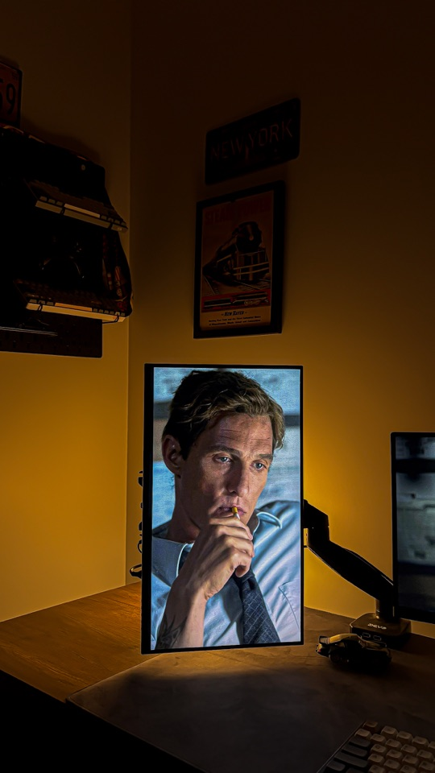
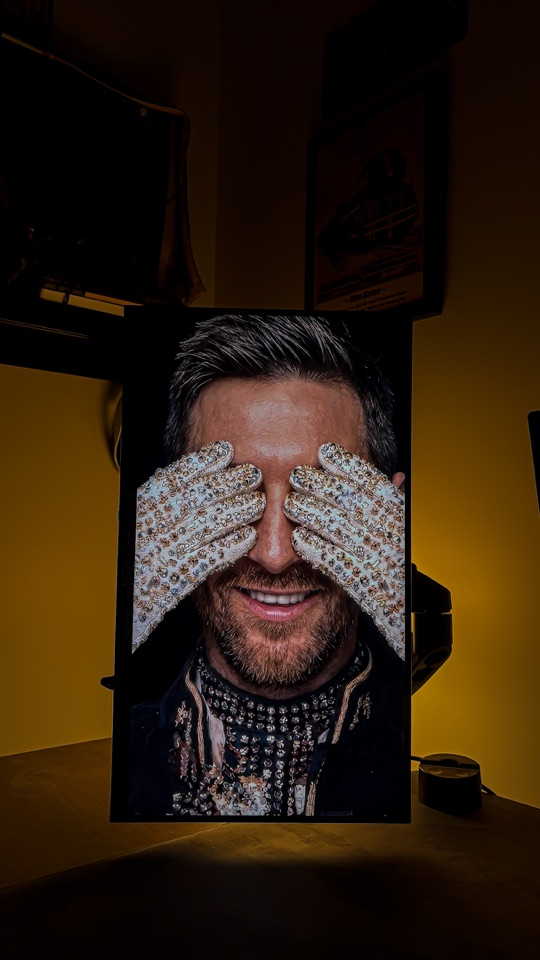
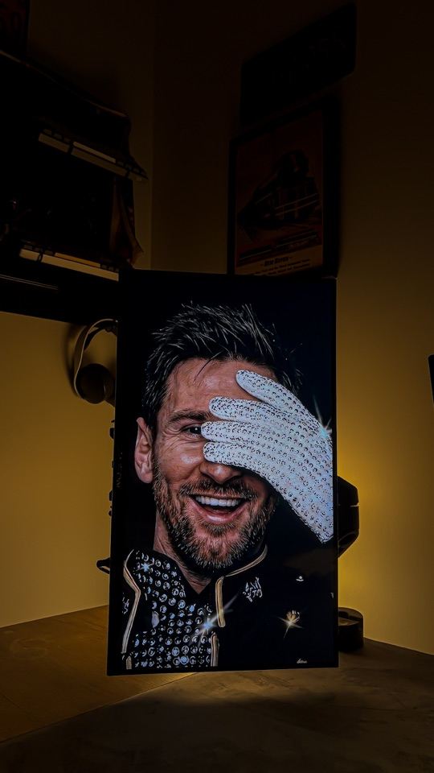
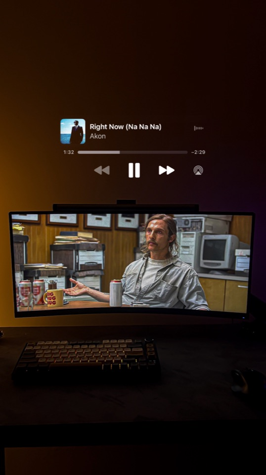
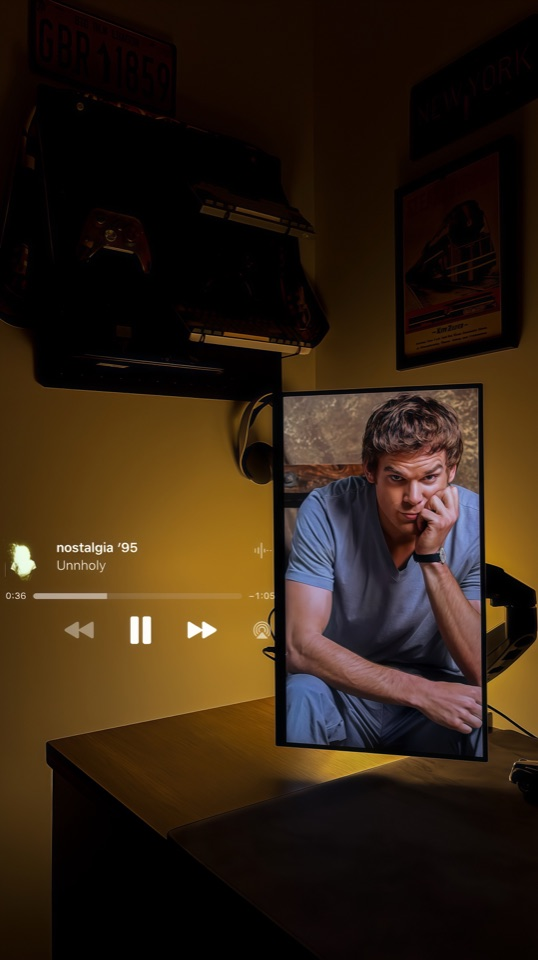
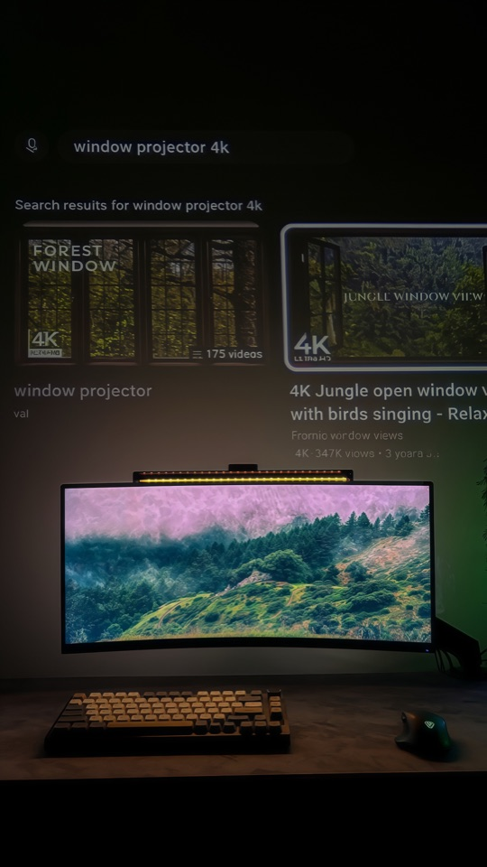

THROUGH MY LENS
لحظة تمرّ.
وأثر يبقى.
صور ومقاطع من عالمي.
كل إطار يحمل شيئًا من الحكاية.
STILL FRAMES
للصورة ذاكرة.
افتح الصورة، واقترب من التفاصيل.












IN MOTION
حكايات تتحرّك.
لحظات بالصوت والصورة.